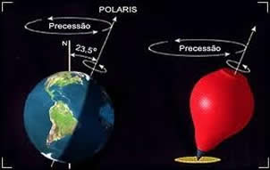
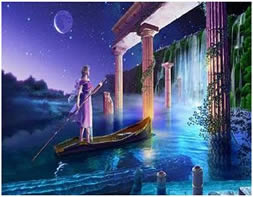
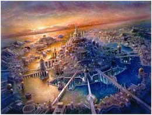
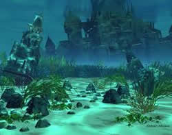

PRECESSÃO DO EIXO DA TERRA
Entenda o que é precessão, e qual a sua relação com as profecias do fim do mundo.
Alinhamento e precessão do eixo da Terra
Em dezembro de 2012, o sol do solstício, vai se alinhar com o centro da nossa galáxia Via Láctea. É um raro alinhamento cósmico, acontece a cada 26 mil anos.
A cada 26 mil anos o sol se alinha com o centro da Via Láctea.
Ao mesmo tempo ocorre outro fenômeno astronômico, uma mudança do eixo da terra a esfera celeste, o fenômeno se chama precessão e a data exata seria em 21.12.2012
A terra oscila lentamente sobre seu eixo, mudando nossa orientação angular em relação à galáxia.
Uma precessão completa, leva 26 mil anos.
O eixo da Terra não é estável, primeiro porque a Terra não é uma esfera perfeita (ela é achatada nos pólos e mais gorda no equador), depois porque ela ainda reage à força gravitacional seja do Sol que da Lua que distorce, de certa forma sua rotação. Isso causa aquilo que é chamado de ‘precessão dos equinócios’, o que significa que, como um pião, a Terra vai mudando o seu eixo.
Precessão e o fim do mundo
Algumas pessoas acreditam que o cataclismo global vai acontecer quando os pólos magnéticos da Terra se inverterem. Quando o norte virar o sul e o sul norte, os continentes vão se mover, gerando terremotos massivos, mudanças climáticas e a extinção das espécies, fazendo com que vários países vão para o fundo do mar e novas terras antes submersas subam para a superfície.
O histórico geológico mostra que os pólos já se reverteram centenas de vezes na história. Por exemplo: Você com certeza já deve ter ouvido a história de Atlântida ou Atlantis, o reino perdido que em apenas um dia afundou-se no mar e desapareceu. Para alguns é uma história fictícia para outros a civilização de Atlântida realmente existiu e sua ilha ou continente está perdida até hoje.
|  |  |  |
Conta a história que a tecnologia deles eram muito mais avançadas do que a nossa, e que o motivo do desaparecimento tenha sido o excesso de materialismo que provocou a ira dos Deuses exterminando a civilização. Dotada de riqueza, poderio e harmonia interna, seus habitantes começaram a intencionar conquistas exteriores.
Segundo o filósofo Critias, o caráter divino e virtuoso do povo, começou a enfraquecer, tomado pela ambição desmedida a ponto de ficar em uma situação de deplorável feiúra. Zeus convocou os Deuses para decidir qual punição seria imposta aos atlantes, é ai que então a cidade teria sido devastada por um forte tsunami e enviada para as profundezas do mar.